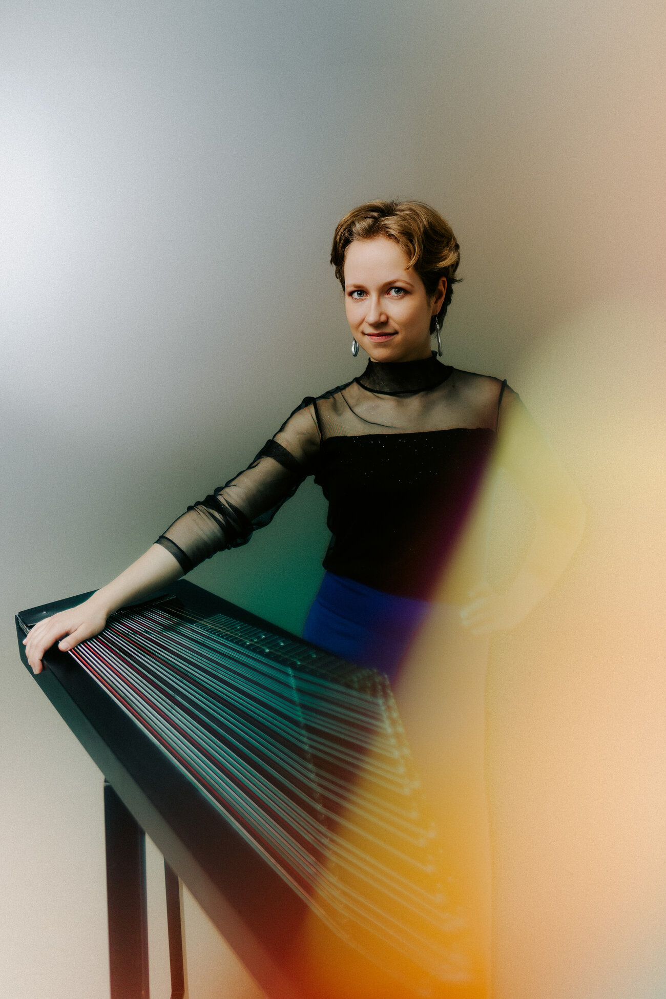

Sarah Luisa Wurmer steht für eine zeitgemäße, klanglich offene Zitherkunst. Sie verbindet virtuos Alte Musik mit Neugier auf zeitgenössische Klänge, erkundet interdisziplinäre Formate und internationale Einflüsse. Als erste Zitheristin in den großen Konzertsälen der Welt, darunter die Wigmore Hall, beschreitet sie einzigartige Wege in der klassischen Musikszene und macht die Zither einem internationalen Publikum zugänglich. Ihre Mission geht über das Musizieren hinaus: Sie möchte Menschen dazu inspirieren, neue und ungewöhnliche Wege zu gehen und Vielfalt zu feiern.
Als Solistin auf der Diskant-, Alt- und Basszither nutzt sie ihr vielfältiges Instrumentarium, um für jedes Programm die ideale Klangfarbe zu finden. Ihr künstlerisches Schaffen ist geprägt von der engen Zusammenarbeit mit Komponierenden, sowie eigenen Arrangements, wodurch sie maßgeblich zur Erweiterung eines neuen Zitherrepertoires beiträgt.
Sarah Luisa Wurmer konzertierte bereits beim Mozartfest Würzburg, den Thüringer Bachwochen, den Festspielen Mecklenburg-Vorpommern und dem Detect Classic Festival. Seit Herbst 2024 ist sie regelmäßig zu Gast beim transkulturellen Bridges Kammerorchester. Die Saison 25/26 führte sie u.a. in die Elbphilharmonie, an die Alte Oper Frankfurt und zum Heidelberger Frühling. Sie gab ihr Debüt als Solistin mit dem Konzerthausorchester Berlin unter der Leitung von Steven Sloane.
Aktuell studiert die 2002 geborene Musikerin an der Hochschule für Musik und Theater München (HMTM) in der Klasse von Prof. Georg Glasl und Tajda Krajnc, ergänzt durch Aufenthalte am Mongolian State Conservatory in Ulaanbaatar und an der mdw – Universität für Musik und darstellende Kunst Wien (Master „Contemporary Arts Practice / Improviser*Composer Performance"). Zu ihren Mentorinnen zählen Hanni Liang (Konzertdesign) und Angela Metzger (Orgel).
Sie wird durch Stipendien des Max-Weber-Programms des Bayerischen Staatsministeriums für Wissenschaft und Kunst sowie des Vereins YEHUDI MENUHIN Live Music Now e.V. gefördert. Für ihr künstlerisches Schaffen wurde sie mehrfach ausgezeichnet, u.a. mit dem „Ernst-Volkmann-Preis" 2024 des 10. Internationalen Zitherwettbewerbs und dem Musikstipendium der Landeshauptstadt München 2024, außerdem als Fanny Mendelssohn Förderpreisträgerin 2025. Im selben Jahr erschien ihr Debütalbum intimacy beim Label ES-DUR, das ihre Suche nach neuen Klangräumen der Zither eindrucksvoll dokumentiert.
Referenzen
„Sarah setzt mit konzeptioneller Tiefe und klanglicher Neugier markante Impulse für die Zither als Konzertinstrument. […] Mit großer Vermittlungskraft und künstlerischer Klarheit rückt sie ihr Instrument in neue Kontexte."
„Sarah Luisa Wurmer ist eine offene Denkerin. Wagemutig in ihrer Art, Musik zu kreieren, und neugierig, alle Felder des Kunst- und Kulturbereichs kennenzulernen. Dabei entdeckt und erprobt sie stets neue Perspektiven auf das Konzert und ihr Instrument."